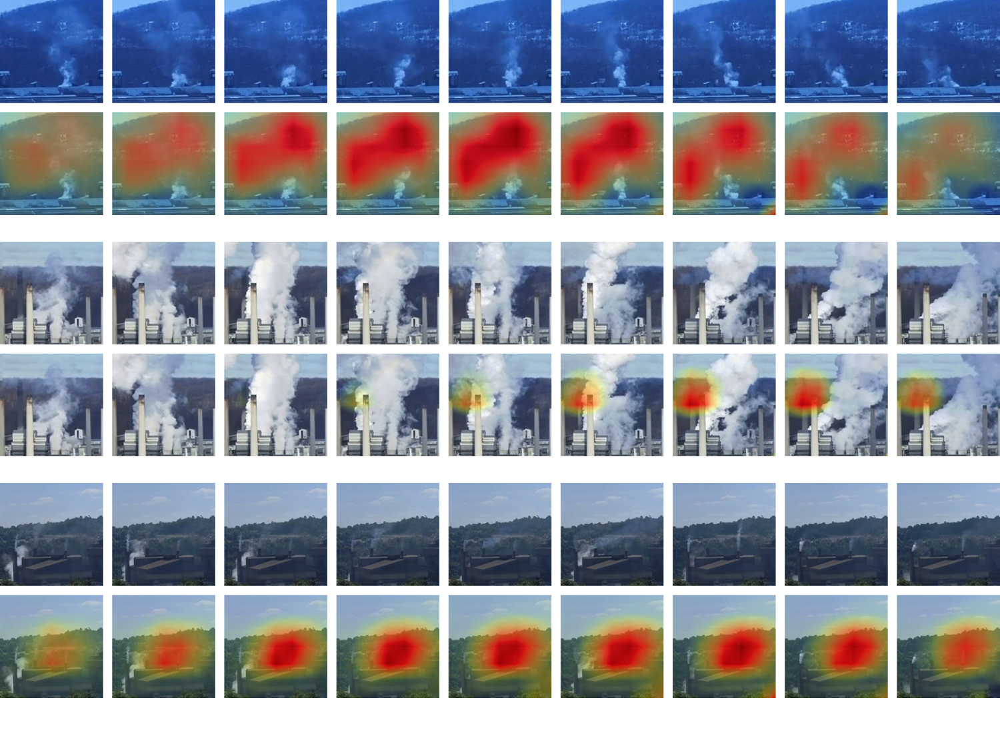

Project RISE, initiated by the CMU CREATE Lab, aims to train an Artificial Intelligence model to Recognize Industrial Smoke Emissions, and we need volunteers to help label smoke emissions. So far, [...] videos are fully labeled. We would greatly appreciate your participation in this community-powered AI research!


{kind=link}
Our goal is to invite citizens in creating data-driven evidence that shows the pollution source (using the smoke emissions found by the AI model) and its impact on the community (using Smell Pittsburgh). We hope that this evidence can facilitate air quality advocacy in Pittsburgh and also other regions.
The system supports Android 7+, iOS 11+, and modern desktop browsers. Please let us know which aspects are working well or could be improved via our feedback form! More information about this project can be found in the highlighted FAQs. For technical details, please refer to another set of FAQs. We appreciate your support!
Progress Update (Aug 2020)
We have used the AI model to process some dates to identify smoke emissions. Please help us improve this tool via our feedback form! We would greatly appreciate it if you could hep us label more data, as the AI model can become better with more annotated videos. Next, we will process more dates and improve the visualization.
Progress Update (May 2020)
We have released the dataset/model, and technical report for recognizing industrial smoke emissions. Many thanks to our volunteers! For the next step, we will use the AI model to analyze and visualize air pollution events in Pittsburgh.
The above shows some examples of how the model recognizes industrial smoke. The heatmaps (red and yellow areas on top of the images) show the locations where the model thinks have smoke emissions.